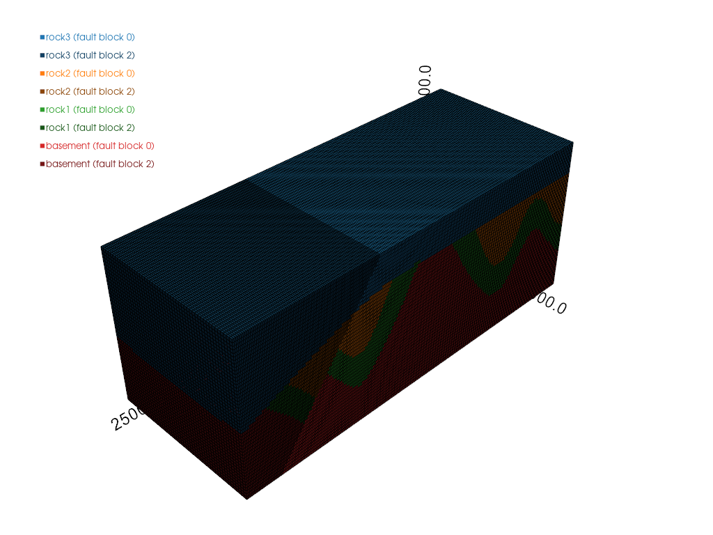
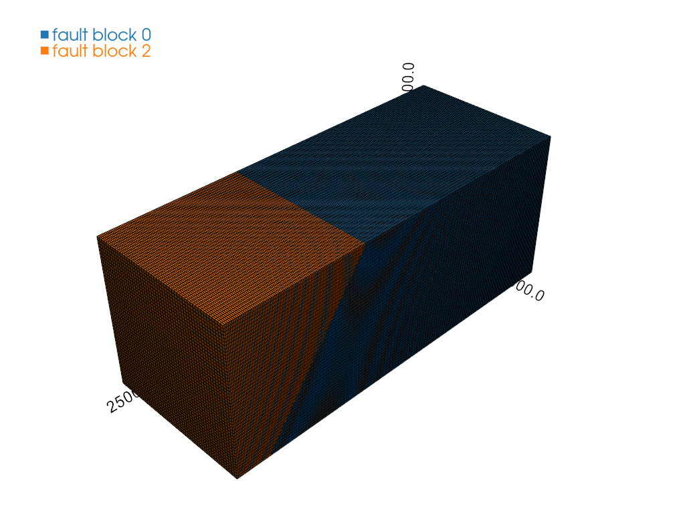
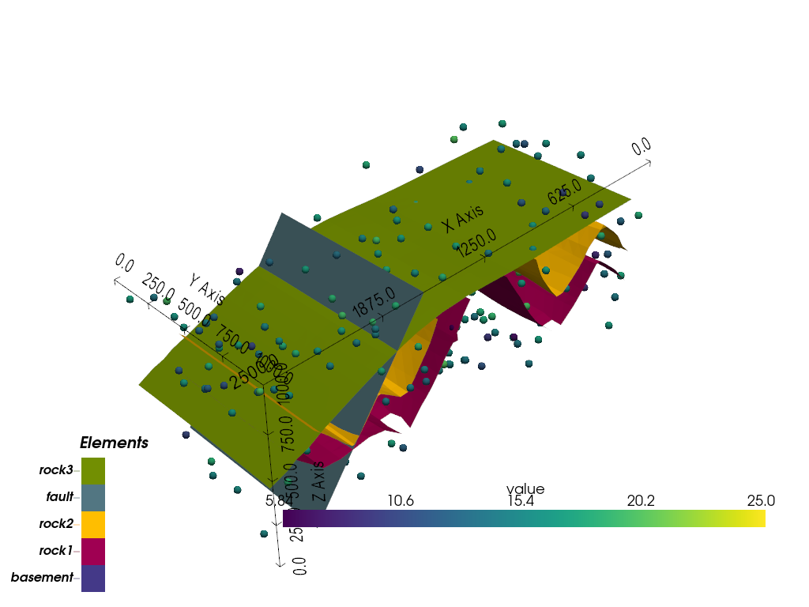
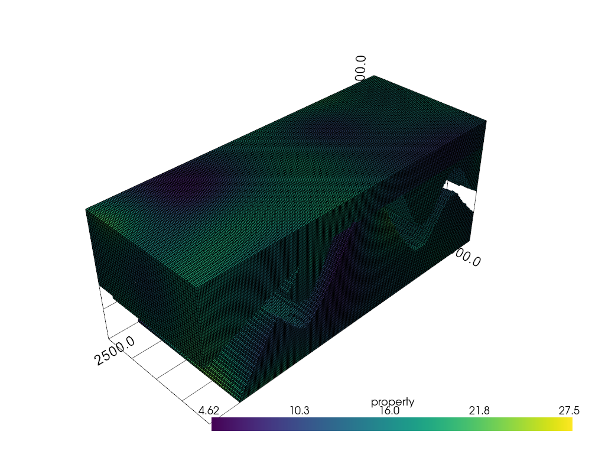
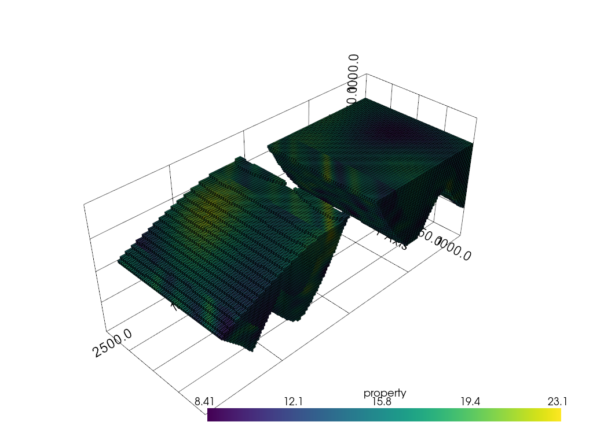
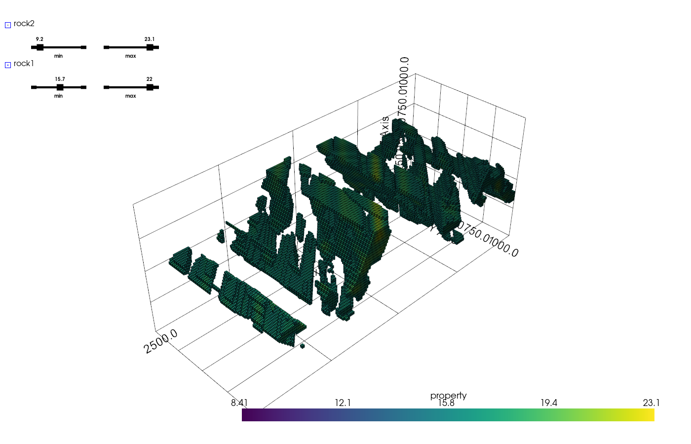

Note
Go to the end to download the full example code.
Populating a Structural Model with Properties¶
Domain-aware kriging and simulation with GSTools, respecting a model’s lithology and fault-block boundaries.
Note
This tutorial relies on gempy_plugins, a separate package maintained in its own
repository rather than by the core GemPy developers.
gempy builds structural models out of boundary surfaces between rock units, but the
actual quantity of interest is often a property within those units – porosity, ore
grade, or whatever else is being measured. This tutorial uses gempy_plugins’
property_estimation module to populate a computed model’s regular grid with such
a property via kriging or simulation, using GSTools for all the
underlying geostatistics: variogram models, kriging, and simulation are all plain
GSTools objects, passed through unmodified.
The one thing this plugin adds on top of GSTools is domain awareness: a “domain” is a (lithology, fault-block) pair, so property estimation can respect both kinds of structural boundary – including the same lithology occurring on both sides of a fault, which has to stay two separate domains, not one.
import numpy as np
import gempy as gp
import gstools as gs
from gempy_plugins.property_estimation.conditioning_data import ConditioningData
from gempy_plugins.property_estimation.domains import compute_domains, describe_domains
from gempy_plugins.property_estimation.kriging import KrigingDomainConfig, run_kriging
from gempy_plugins.property_estimation.plotting import (
plot_conditioning_data, plot_domains, plot_fault_blocks, plot_property_field,
plot_property_field_interactive,
)
from gempy_plugins.property_estimation.simulation import SimulationDomainConfig, run_simulation
np.random.seed(1)
A faulted structural model¶
A synthetic model with three lithologies (rock3, rock2, rock1) and a
basement, offset by a single fault. rock3 is deliberately mapped as younger than
the fault, so the fault doesn’t actually offset it – this is used further down to
demonstrate merging domains that a fault splits geometrically without any real
structural break.
data_path = 'https://raw.githubusercontent.com/cgre-aachen/gempy_data/master/'
geo_model = gp.create_geomodel(
project_name='combination',
extent=[0, 2500, 0, 1000, 0, 1000],
resolution=[250, 50, 50],
importer_helper=gp.data.ImporterHelper(
path_to_orientations=data_path + "/data/input_data/jan_models/model7_orientations.csv",
path_to_surface_points=data_path + "/data/input_data/jan_models/model7_surface_points.csv"
)
)
gp.map_stack_to_surfaces(
gempy_model=geo_model,
mapping_object={
"Strat_Series1": ('rock3'),
"Fault_Series": ('fault'),
"Strat_Series2": ('rock2', 'rock1'),
}
)
gp.set_is_fault(geo_model, ["Fault_Series"])
gp.compute_model(geo_model)
Surface points hash: dd7b2f714c1c20cb7ce615c5c47ecc4cf3ca2ee3419e4090b2f11fbf633d459f
Orientations hash: 4043b59bbfa7012abd818f04f74e2b0667ba970dd71c781512289bc073f5a6d5
Setting Backend To: AvailableBackends.PYTORCH
GPU enabled. Using device: cuda
GPU device count: 1
Current GPU device: 0
Chunking done: 26 chunks
Chunking done: 11 chunks
Chunking done: 131 chunks
Computing and inspecting the domains¶
compute_domains combines lithology and fault-block membership into per-cell
domain keys, and plot_domains visualizes the result directly:
lith_array, fault_array, domain_keys = compute_domains(geo_model)
describe_domains(geo_model, domain_keys)
{(1, 0): 'rock3 (fault block 0)', (1, 2): 'rock3 (fault block 2)', (3, 0): 'rock2 (fault block 0)', (3, 2): 'rock2 (fault block 2)', (4, 0): 'rock1 (fault block 0)', (4, 2): 'rock1 (fault block 2)', (5, 0): 'basement (fault block 0)', (5, 2): 'basement (fault block 2)'}
Each lithology gets its own base color, with its fault-block variants shown as shades of that color, so “same rock unit, different fault block” is visually obvious:
plot_domains(geo_model, lith_array, fault_array, domain_keys)

<pyvista.plotting.plotter.Plotter object at 0x7f3e4416fd90>
Shades alone don’t say which fault block is which, though – and that’s exactly
what’s needed to decide whether domains should be merged. plot_fault_blocks shows
fault blocks alone, unambiguously labeled:
plot_fault_blocks(geo_model, fault_array)

<pyvista.plotting.plotter.Plotter object at 0x7f3e3f734410>
Why some domains need merging¶
rock3 is mapped younger than the fault, so the fault’s structural relations don’t
apply an offset to it at all. And yet rock3 still shows up as two separate
domains, one per fault block: fault-block membership is purely geometric – which
side of the fault’s surface a cell falls on – independent of whether a fault
actually offsets a given lithology. A real fault of negligible offset produces the
exact same situation: geometrically there are still two blocks, even though nothing
really moved. Either way, the fix is the same: merge the domains that should be
treated as one. This is a purely structural decision – it needs only the domain
keys, no conditioning data. A domain_configs key can be a tuple of domain keys
instead of a single one, to merge them:
rock3_merged = (domain_keys[0], domain_keys[1])
Conditioning data¶
Standing in for real property samples (e.g. from boreholes): scattered points with a measured value, assigned to their nearest domain.
n_samples = 300
conditioning_data = ConditioningData(
x=np.random.uniform(0, 2500, n_samples),
y=np.random.uniform(0, 1000, n_samples),
z=np.random.uniform(0, 1000, n_samples),
values=np.random.normal(15, 3, n_samples),
)
conditioning_data.assign_domains(geo_model, lith_array, fault_array)
It’s worth seeing where these samples actually sit relative to the structure before
running anything. plot_conditioning_data overlays them, colored by value, on the
model’s surfaces alone:
plot_conditioning_data(geo_model, conditioning_data)

<gempy_viewer.modules.plot_3d.vista.GemPyToVista object at 0x7f3e3f712f90>
Retrieving conditioning data per domain¶
ConditioningData.for_domain pulls out the samples belonging to one domain – or a
merged group of them, exactly like the domain_configs keys below – once
assign_domains has run, returning a small object with just that subset’s own
.xyz/.values arrays. Handy any time something domain-specific needs to be
done directly with the raw samples, e.g. fitting a variogram per domain.
rock3_samples = conditioning_data.for_domain(rock3_merged)
rock3_samples.xyz.shape, rock3_samples.values.shape
((78, 3), (78,))
Kriging, with different settings per domain¶
A domain is processed only if it has an entry in domain_configs, so kriging can
be run over a chosen subset of domains, each with its own variogram model and kriging
method. Three domains get different treatment here: the merged rock3 domain and
basement share a Gaussian model, rock2 gets an Exponential model instead, and
kriging type varies independently of that – Ordinary for rock3/rock2, Simple
with a fixed mean for basement. A small nugget is added to the Gaussian model,
since a smooth, nugget-free Gaussian covariance model can become numerically
ill-conditioned once a domain has many conditioning points – a wildly out-of-range
kriged result is a symptom of exactly this. The Exponential model doesn’t have that
problem even without a nugget.
gaussian_model = gs.Gaussian(dim=3, var=4, len_scale=400, nugget=0.1)
exponential_model = gs.Exponential(dim=3, var=4, len_scale=400)
domain_configs = {
rock3_merged: KrigingDomainConfig(model=gaussian_model),
domain_keys[2]: KrigingDomainConfig(model=exponential_model),
domain_keys[6]: KrigingDomainConfig(
model=gaussian_model,
krige_class=gs.krige.Simple,
krige_kwargs={'mean': 15},
),
}
field = run_kriging(geo_model, conditioning_data, domain_configs)
Only the three configured domains are populated; every other cell stays nan and simply isn’t rendered:
plot_property_field(geo_model, field)

<pyvista.plotting.plotter.Plotter object at 0x7f3e3f735810>
Retrieving results per domain¶
PropertyField.for_domain mirrors this on the result side: xyz + values (+
variance) for one domain or a merged group, pulled straight out of the full-grid
arrays instead of off the raw samples:
rock3_result = field.for_domain(geo_model, rock3_merged)
rock3_result.xyz.shape, rock3_result.values.shape
((164752, 3), (164752,))
Simulation¶
run_simulation mirrors run_kriging’s domain loop, but for GSTools’s
stochastic-simulation classes (SRF/CondSRF) instead of kriging. Two domains
here, each merged across both fault blocks: rock2 conditioned with a plain
isotropic Gaussian model, rock1 unconditioned with a strongly anisotropic model –
a “directional variogram” with high continuity along the diagonal between x and y,
and low continuity in the two directions normal to that.
rock2_merged = (domain_keys[2], domain_keys[3])
rock1_merged = (domain_keys[4], domain_keys[5])
GSTools’ anis/angles parameters do this directly on any covariance model,
with nothing simulation- or plugin-specific about it: angles=(pi/4, 0, 0) rotates
the model’s main axis onto the x-y diagonal, and anis shrinks the range in the
two remaining directions – the perpendicular in-plane diagonal, and z:
directional_model = gs.Gaussian(dim=3, var=4, len_scale=1000, anis=[0.05, 0.05], angles=(np.pi / 4, 0, 0))
simulation_configs = {
rock2_merged: SimulationDomainConfig(model=gaussian_model, seed=1),
rock1_merged: SimulationDomainConfig(
model=directional_model,
conditioned=False,
srf_kwargs={'mean': 15},
seed=2,
),
}
simulated_field = run_simulation(geo_model, conditioning_data, simulation_configs)
plot_property_field(geo_model, simulated_field)

<pyvista.plotting.plotter.Plotter object at 0x7f3e3f735a90>
Interactive inspection¶
plot_property_field above stays the simple default. For a more exploratory look,
plot_property_field_interactive gives each domain its own visibility checkbox
plus a two-sided min/max slider that thresholds just that domain’s displayed cells –
e.g. to isolate only the highest-value cells in one domain while hiding another
entirely. Passing domain_configs collapses each merged group back into a single
row of controls, matching how the run was actually set up.
plotter = plot_property_field_interactive(
geo_model, simulated_field, domain_configs=simulation_configs, show=False
)
# The checkbox/slider widgets are plain VTK objects underneath, so their state can be
# set programmatically too -- used here just to make the screenshot above show what
# the controls actually do: rock2 (the upper domain) hidden, and rock1 narrowed down
# to its higher-value cells.
rock1_values = simulated_field.for_domain(geo_model, rock1_merged).values
rock1_highlight = float(np.nanpercentile(rock1_values, 60))
rock2_checkbox = plotter.widgets.button_widgets[0]
rock2_checkbox.GetRepresentation().SetState(0)
rock2_checkbox.InvokeEvent('StateChangedEvent')
rock1_min_slider = plotter.widgets.slider_widgets[2]
rock1_min_slider.GetSliderRepresentation().SetValue(rock1_highlight)
rock1_min_slider.InvokeEvent('EndInteractionEvent')
plotter.show()
# sphinx_gallery_thumbnail_number = 6

Total running time of the script: (0 minutes 12.705 seconds)